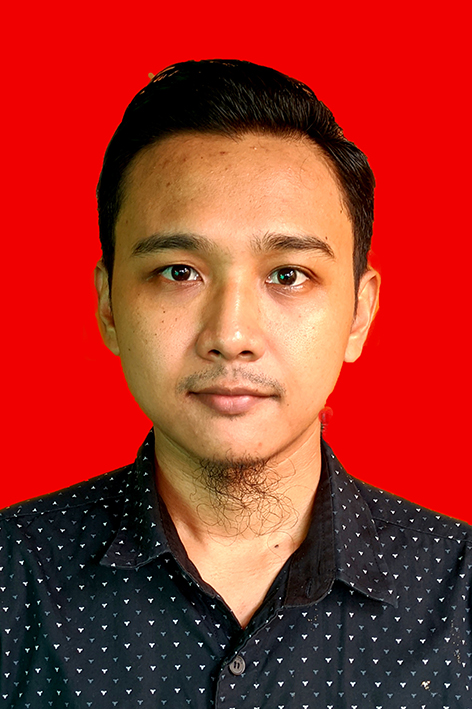

Sandi Miftah Nur Arizal

Summary
I am an IT enthusiast who are working as IT Support with more than 5 years of experiences.
Education
- Associate Degree in Management of Informatics - STMIK Cikarang (2015-2018)
Work Experience
Skills
- IT Technical Support
- Web Design
- Microsoft Office, Google Office, Libreoffice
- Linux OS Environment
- Languages: English, Indonesia, Arabic
Certificates and Awards
- Sololearn : Advance Javascript - August 2023
- dikoding.id : Basic Web Development - November 2020
- TechinAsia: How to build Website a la TechinAsia - October 2020
- STMIK Cikarang Best graduate in D3 Program - November 2018
Others